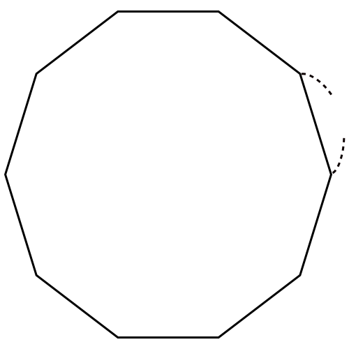

- 문제 1
- 문제 2
- 문제 3
- 문제 4
- 문제 5
-
정십각형의 둘레를 구해 보시오.
 3 ㎝ ㎝30 -
한 변의 길이가 주어진 수와 같을 때 둘레는 각각 얼마인지 구하시오.
한 변의 길이(㎝) 둘레(㎝) 정사각형 6 24정육각형 5 30정팔각형 3 24 -
정다각형의 둘레가 주어진 수와 같을 때 한 변의 길이는 각각 얼마인지 구하시오.
한 변의 길이(㎝) 둘레(㎝) 정삼각형 39 정칠각형 642 정구각형 436 -
아래 정오각형과 둘레가 같은 정사각형의 한 변의 길이는 몇 ㎝입니까?
8 ㎝ ㎝10 -
에서 둘레가 가장 짧은 도형을 찾아 기호를 쓰시오.
-
ㄱ
한 변의 길이가 8 cm인 정구각형
-
ㄴ
한 변의 길이가 11 cm인 정육각형
-
ㄷ
한 변의 길이가 7 cm인 정십각형
ㄴ -
ㄱ